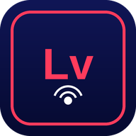

Newland Studio
NWLlive
Salva
Progetto ▾
00:00:00
Uscita
REC
DIRETTA
?
Anteprima
CUT
AUTO
Dissolvenza
Tendina
Scorrimento
Zoom
Passa per nero
Stacco
secondi
FTB
Programma
Scene e ingressi
+ Scena
+ Ingresso
Proprietà
Grafica
Scaletta
Inviati
Audio
Ascolto